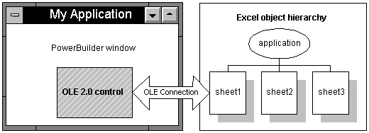

This chapter has described the three ways to use OLE in a window or user object. You have learned about:
In scripts, you can manipulate these objects by means of OLE automation, getting and setting properties, and calling functions that are defined by the OLE server. There are examples of automation commands in the preceding sections. This section provides more information about the automation interface in PowerBuilder.
In PowerBuilder, an OLEObject is your interface to an OLE server or ActiveX control. When you declare an OLEObject variable and connect to a server, you can use dot notation for that variable and send instructions to the server. The instruction might be a property whose value you want to get or set, or a function you want to call.
The general automation syntax for an OLEObject is:
oleobjectvar.serverinstruction
For OLE controls in a window, your interface to the server or ActiveX control is the control's Object property, which has a datatype of OLEObject.
The general automation syntax for an OLE control is:
olecontrol.Object.serverinstruction
 Compiling scripts that include commands to the OLE
server When you compile scripts that apply methods to an OLEObject
(including a control's Object property), PowerBuilder does
not check the syntax of the rest of the command, because it does
not know the server's command set. You must ensure that
the syntax is correct to avoid errors during execution.
Compiling scripts that include commands to the OLE
server When you compile scripts that apply methods to an OLEObject
(including a control's Object property), PowerBuilder does
not check the syntax of the rest of the command, because it does
not know the server's command set. You must ensure that
the syntax is correct to avoid errors during execution.
A server's command set includes properties and methods (functions and events).
OLE server applications publish the command set they support for automation. Check your server application's documentation for information.
For custom controls and programmable OLE objects, you can see a list of properties and methods in the PowerBuilder Browser. For more information about OLE information in the Browser, see "OLE information in the Browser ".
You access server properties for an OLE control through its Object property using the following syntax:
olecontrolname.Object.{ serverqualifiers.}propertyname
If the OLE object is complex, there could be nested objects or properties within the object that serve as qualifiers for the property name.
For example, the following commands for an Excel spreadsheet object activate the object and set the value property of several cells:
double value
ole_1.Activate(InPlace!)
ole_1.Object.cells[1,1].value = 55
ole_1.Object.cells[2,2].value = 66
ole_1.Object.cells[3,3].value = 77
ole_1.Object.cells[4,4].value = 88
For an Excel 95 spreadsheet, enclose the cells' row and column arguments in parentheses instead of square brackets. For example:
ole_1.Object.cells(1,1).value = 55
For properties of an OLEObject variable, the server qualifiers and property name follow the variable name:
oleobjectvar.{ serverqualifiers.}propertyname
The qualifiers you need to specify depend on how you connect to the object. For more information, see "Qualifying server commands".
You can call server functions for an OLE control through its Object property using the following syntax:
olecontrolname.Object.{ serverqualifiers.}functionname ( { arguments } )
If the OLE object is complex, there could be nested properties or objects within the object that serve as qualifiers for the function name.
 Required parentheses PowerScript considers all commands to the server either property
settings or functions. For statements and functions to be distinguished
from property settings, they must be followed by parentheses surrounding
the parameters. If there are no parameters, specify empty parentheses.
Required parentheses PowerScript considers all commands to the server either property
settings or functions. For statements and functions to be distinguished
from property settings, they must be followed by parentheses surrounding
the parameters. If there are no parameters, specify empty parentheses.
PowerBuilder converts OLE data to and from compatible PowerBuilder datatypes. The datatypes of values you specify for arguments must be compatible with the datatypes expected by the server, but they do not need to be an exact match.
When the function returns a value, you can assign the value to a PowerBuilder variable of a compatible datatype.
If an OLE server expects an argument to be passed by reference so that it can pass a value back to your script, include the keyword REF just before the argument. This is similar to the use of REF in an external function declaration:
olecontrol.Object.functionname ( REF argname )
In these generic examples, the server can change the values of ls_string and li_return because they are passed by reference:
string ls_string
integer li_return
ole_1.Object.testfunc(REF ls_string, REF li_return)
This example illustrates the same function call using an OLEObject variable.
OLEObject ole_obj
ole_obj = CREATE OLEObject
ole_obj.ConnectToNewObject("servername")
ole_obj.testfunc(REF ls_string, REF li_return)
 Setting the timeout period Calls from a PowerBuilder client to a server time out after
five minutes. You can use the SetAutomationTimeout PowerScript
function to change the default timeout period if you expect a specific
OLE request to take longer.
Setting the timeout period Calls from a PowerBuilder client to a server time out after
five minutes. You can use the SetAutomationTimeout PowerScript
function to change the default timeout period if you expect a specific
OLE request to take longer.
Microsoft Word 6.0 and 7.0 support automation with a command set similar to the WordBasic macro language. The command set includes both statements and functions and uses named parameters. Later versions of Microsoft Word use Visual Basic for Applications (VBA), which consists of a hierarchy of objects that expose a specific set of methods and properties.
WordBasic statements WordBasic has both statements and functions. Some of them have the same name. WordBasic syntax differentiates between statements and functions calls, but PowerBuilder does not.
To specify that you want to call a statement, you can include AsStatement! (a value of the OLEFunctionCallType enumerated datatype) as an argument. Using AsStatement! is the only way to call WordBasic statements that have the same name as a function. Even when the statement name does not conflict with a function name, specifying AsStatement! is more efficient:
olecontrol.Object.application.wordbasic.statementname
( argumentlist, AsStatement! )
For example, the following code calls the AppMinimize statement:
ole_1.Object.application.wordbasic. &
AppMinimize("",1,AsStatement!)
Named parameters PowerBuilder does not support named parameters that both WordBasic and Visual Basic use. In the parentheses, specify the parameter values without the parameter names.
For example, the following statements insert text at a bookmark in a Word 6.0 or 7.0 document:
ole_1.Activate(InPlace!)
Clipboard(mle_nameandaddress.Text)
ole_1.Object.application.wordbasic.&
fileopen("c:\msoffice\winword\doc1.doc")
ole_1.Object.application.wordbasic.&
editgoto("NameandAddress", AsStatement!)
ole_1.Object.application.wordbasic.&
editpaste(1, AsStatement!)
The last two commands in a WordBasic macro would look like this, where Destination is the named parameter:
EditGoto.Destination = "NameandAddress"
EditPaste
In a PowerBuilder script, you would use this syntax to insert text in a Word 97 or later document:
ole_1.Object.Selection.TypeText("insert this text")
In the corresponding Visual Basic statement, the named parameter Text contains the string to be inserted:
Selection.TypeText Text:="insert this text"
 Automation is not macro programming You cannot send commands to the server application that declare
variables or control the flow of execution (for example, IF
THEN). Automation executes one command at a time independently
of any other commands. Use PowerScript's conditional and
looping statements to control program flow.
Automation is not macro programming You cannot send commands to the server application that declare
variables or control the flow of execution (for example, IF
THEN). Automation executes one command at a time independently
of any other commands. Use PowerScript's conditional and
looping statements to control program flow.
Example of Word automation To illustrate how to combine PowerScript with server commands, the following script counts the number of bookmarks in a Microsoft Word OLE object and displays their names:
integer i, count
string bookmarklist, curr_bookmark
ole_1.Activate(InPlace!)
count = ole_1.Object.Bookmarks.Count
bookmarklist = "Bookmarks = " + String(count) + "~n"
FOR i = 1 to count
curr_bookmark = ole_1.Object.Bookmarks[i].Name
bookmarklist = bookmarklist + curr_bookmark + "~n"
END FOR
MessageBox("BookMarks", bookmarklist)
 Word automation tip You can check that you are using the correct syntax for Word
automation with the Word macro editor. Turn on macro recording in
Word, perform the steps you want to automate manually, then turn
off macro recording. You can then type Alt+F11 to open
the macro editor and see the syntax that was built. Remember that
PowerBuilder uses square brackets for array indexes.
Word automation tip You can check that you are using the correct syntax for Word
automation with the Word macro editor. Turn on macro recording in
Word, perform the steps you want to automate manually, then turn
off macro recording. You can then type Alt+F11 to open
the macro editor and see the syntax that was built. Remember that
PowerBuilder uses square brackets for array indexes.
Example of Word 6.0 and 7.0 automation The following script counts the number of bookmarks in a Microsoft Word 6.0 or 7.0 OLE object and displays their names:
integer i, count
string bookmarklist, curr_bookmark
ole_1.Activate(InPlace!)
// Get the number of bookmarks
count = ole_1.Object. &
application.wordbasic.countbookmarks
bookmarklist = "Bookmarks = " + String(count) + "~n"
// Get the name of each bookmark
FOR i = 1 to count
curr_bookmark = ole_1.Object. &
application.wordbasic.bookmarkname(i)
bookmarklist = bookmarklist + curr_bookmark + "~n"
END FOR
MessageBox("BookMarks", bookmarklist)
Whether to qualify the server command with the name of the application depends on the server and how the object is connected. Each server implements its own version of an object hierarchy, which needs to be reflected in the command syntax. For example, the Microsoft Excel object hierarchy is shown in Figure 19-2.

When the server is Excel, the following commands appear to mean the same thing but can have different effects (for an Excel 95 spreadsheet, the cells' row and column arguments are in parentheses instead of square brackets):
ole_1.Object.application.cells[1,2].value = 55
ole_1.Object.cells[1,2].value = 55
The first statement changes a cell in the active document. It moves up Excel's object hierarchy to the Application object and back down to an open sheet. It does not matter whether it is the same one in the PowerBuilder control. If the user switches to Excel and activates a different sheet, the script changes that one instead. You should avoid this syntax.
The second statement affects only the document in the PowerBuilder control. However, it will cause a runtime error if the document has not been activated. It is the safer syntax to use, because there is no danger of affecting the wrong data.
Microsoft Word 6.0 and 7.0 implement the application hierarchy differently and require the qualifier application.wordbasic when you are manipulating an object in a control. (You must activate the object.) For example:
ole_1.Object.application.wordbasic.bookmarkname(i)
Later versions of Microsoft Word do not require a qualifier, but it is valid to specify one. You can use any of the following syntaxes:
ole_1.Object.Bookmarks.[i].Name
ole_1.Object.Bookmarks.item(i).Name
ole_1.Object.application.ActiveDocument. &
Bookmarks.[i].Name
When you are working with PowerBuilder's OLEObject, rather than an object in a control, you omit the application qualifiers in the commands because you have already specified them when you connected to the object. (For more about the OLEObject object type, see "Programmable OLE Objects ".)
Because PowerBuilder knows nothing about the commands and functions of the server application, it also knows nothing about the datatypes of returned information when it compiles a program. Expressions that access properties and call functions have a datatype of Any. You can assign the expression to an Any variable, which avoids datatype conversion errors.
During execution, when data is assigned to the variable, it temporarily takes the datatype of the value. You can use the ClassName function to determine the datatype of the Any variable and make appropriate assignments. If you make an incompatible assignment with mismatched datatypes, you will get a runtime error.
 Do not use the Any datatype unnecessarily If you know the datatype of data returned by a server automation
function, do not use the Any datatype. You
can assign returned data directly to a variable of the correct type.
Do not use the Any datatype unnecessarily If you know the datatype of data returned by a server automation
function, do not use the Any datatype. You
can assign returned data directly to a variable of the correct type.
The following sample code retrieves a value from Excel and assigns it to the appropriate PowerBuilder variable, depending on the value's datatype. (For an Excel 95 spreadsheet, the row and column arguments for cells are in parentheses instead of square brackets.)
string stringval
double dblval
date dateval
any anyval
anyval = myoleobject.application.cells[1,1].value
CHOOSE CASE ClassName(anyval)
CASE "string"
stringval = anyval
CASE "double"
dblval = anyval
CASE "datetime"
dateval = Date(anyval)
END CHOOSE
When your automation command refers to a deeply nested object with multiple server qualifiers, it takes time to negotiate the object's hierarchy and resolve the object reference. If you refer to the same part of the object hierarchy repeatedly, then for efficiency you can assign that part of the object reference to an OLEObject variable. The reference is resolved once and reused.
Instead of coding repeatedly for different properties:
ole_1.Object.application.wordbasic.propertyname
you can define an OLEObject variable to handle all the qualifiers:
OLEObject ole_wordbasic
ole_wordbasic = ole_1.Object.application.wordbasic
ole_wordbasic.propertyname1 = value
ole_wordbasic.propertyname2 = value
This example uses an OLEObject variable to refer to a Microsoft Word object. Because it is referred to repeatedly in a FOR loop, the resolved OLEObject makes the code more efficient. The example destroys the OLEObject variable when it is done with it:
integer li_i, li_count
string ls_curr_bookmark
OLEObject ole_wb
ole_1.Activate(InPlace!)
ole_wb = ole_1.Object.application.wordbasic
// Get the number of bookmarks
li_count = ole_wb.countbookmarks
// Get the name of each bookmark
FOR li_i = 1 to count
ls_curr_bookmark = ole_wb.bookmarkname(i)
... // code to save the bookmark name in a list
END FOR
Statements in scripts that refer to the OLE server's properties are not checked in the compiler because PowerBuilder does not know what syntax the server expects. Because the compiler cannot catch errors, runtime errors can occur when you specify property or function names and arguments the OLE server does not recognize.
When an error occurs that is generated by a call to an OLE server, PowerBuilder follows this sequence of events:
You can handle the error in any of these events or in a script using a TRY-CATCH block. However, it is not a good idea to continue processing after the SystemError event occurs.
For more information about exception handling, see "Handling exceptions".
PowerBuilder OLE objects and controls all have two events for error handling:
If the OLE control defines a stock error event, the PowerBuilder OLE control container has an additional event:
The creator of an OLE control can generate the stock error event for the control using the Microsoft Foundation Classes (MFC) Class Wizard. The arguments for the ocx_error event in PowerBuilder map to the arguments defined for the stock error event.
If the PowerBuilder OLE control has an ocx_error event script, you can get information about the error from the event's arguments and take appropriate action. One of the arguments of ocx_error is the boolean CancelDisplay. You can set CancelDisplay to TRUE to cancel the display of any MFC error message. You can also supply a different description for the error.
In either the ExternalException or Error event script, you set the Action argument to an ExceptionAction enumerated value. What you choose depends on what you know about the error and how well the application will handle missing information.
The ExternalException event, like the ocx_error event, provides error information from the OLE server that can be useful when you are debugging your application.
Suppose your window has two instance variables: one for specifying the exception action and another of type Any for storing a potential substitute value. Before accessing the OLE property, a script sets the instance variables to appropriate values:
ie_action = ExceptionSubstituteReturnValue!
ia_substitute = 0
li_currentsetting = ole_1.Object.Value
If the command fails, a script for the ExternalException event displays the Help topic named by the OLE server, if any. It substitutes the return value you prepared and returns. The assignment of the substitute value to li_currentsetting works correctly because their datatypes are compatible:
string ls_context
// Command line switch for WinHelp numeric context ID
ls_context = "-n " + String(helpcontext)
IF Len(HelpFile) > 0 THEN
Run("winhelp.exe " + ls_context + " " + HelpFile)
END IF
Action = ExceptionSubstituteReturnValue!
ReturnValue = ia_substitute
Because the event script must serve for every automation command for the control, you would need to set the instance variables to appropriate values before each automation command.
The Error event provides information about the PowerBuilder context for the error. You can find out the PowerBuilder error number and message, as well as the object, script, and line number of the error. This information is useful when debugging your application.
The same principles discussed in the ExceptionAction value table for setting the Action and ReturnValue arguments apply to the Error event, as well as ExternalException.
For more information about the events for error handling, see the PowerScript Reference .
Some OLE servers support property change notifications. This means that when a property is about to be changed and again after it has been changed, the server notifies the client, passing information about the change. These messages trigger the events PropertyRequestEdit and PropertyChanged.
When a property is about to change, PowerBuilder triggers the PropertyRequestEdit event. In that event's script you can:
When a property has changed, PowerBuilder triggers the PropertyChanged event. In that event's script, you can:
Because the PropertyName argument is a string, you cannot use it in dot notation to get the value of the property:
value = This.Object.PropertyName // Will not work
Instead, use CHOOSE CASE or IF statements for the property names that need special handling.
For example, in the PropertyChanged event, this code checks for three specific properties and gets their new value when they are the property that changed. The value is assigned to a variable of the appropriate datatype:
integer li_index, li_minvalue
long ll_color
CHOOSE CASE Lower(PropertyName)
CASE "value"
li_index = ole_1.Object.Value
CASE "minvalue"
li_minvalue = ole_1.Object.MinValue
CASE "backgroundcolor"
ll_color = ole_1.Object.BackgroundColor
CASE ELSE
... // Other processing
END CHOOSE
In some cases the value of the PropertyName argument is an empty string (""). This means a more general change has occurred—for example, a change that affects several properties.
If the OLE server does not support property change notification, then the PropertyRequestEdit and PropertyChanged events are never triggered, and scripts you write for them will not run. Check your OLE server documentation to see if notification is supported.
If notifications are not supported and your application needs to know about a new property value, you might write your own function that checks the property periodically.
For more information about the PropertyRequestEdit and PropertyChanged events, see the PowerScript Reference .
When you write automation commands, you generally use commands that match the locale for your computer. If your locale and your users' locale will differ, you can specify the language you have used for automation with the SetAutomationLocale function.
You can call SetAutomationLocale for OLE controls, custom controls, and OLEObjects, and you can specify a different locale for each automation object in your application.
For example, if you are developing your application in Germany and will deploy it all over Europe, you can specify the automation language is German. Use this syntax for an OLE control called ole_1:
ole_1.Object.SetAutomationLocale(LanguageGerman!)
Use this syntax for an OLEObject called oleobj_report:
oleobj_report.SetAutomationlocale(LanguageGerman!)
The users of your application must have the German automation interface for the OLE server application.
 What languages do your users' computers support? When your users install an OLE server application (particularly
an OLE application from Microsoft), they get an automation interface
in their native language and in English. It might not be appropriate
for you to write automation commands in your native language if
your users have a different language.
What languages do your users' computers support? When your users install an OLE server application (particularly
an OLE application from Microsoft), they get an automation interface
in their native language and in English. It might not be appropriate
for you to write automation commands in your native language if
your users have a different language.
For more information, see the SetAutomationLocale function in the PowerScript Reference .
If you need low-level access to OLE through a C or C++ DLL that you call from PowerBuilder, you can use these functions:
When you have finished, you must use these functions to free the pointer:
For more information, see the PowerScript Reference .
The preceding sections discuss the automation interface to OLE controls and OLE objects. You can also use scripts to change settings for an OLE object embedded in a DataWindow object, and you can address properties of the external OLE object.
This section describes how to use the Object property in dot notation to set DataWindow properties and issue automation commands for OLE objects in DataWindow objects.
To use dot notation for the OLE object, give the object a name. You specify the name on the General page in the object's property sheet.
You set properties of the OLE container object just as you do for any object in the DataWindow object. The Object property of the control is an interface to the objects within the DataWindow object.
For example, this statement sets the Pointer property of the object ole_word:
dw_1.Object.ole_word.Pointer = "Cross!"
It is important to remember that the compiler does not check syntax after the Object property. Incorrect property references cause runtime errors.
For more information about setting properties, handling errors, and the list of properties for the OLE DWObject, see the DataWindow Reference .
 OLE objects and the Modify function You cannot create an OLE object in a DataWindow object dynamically
using the CREATE keyword of the Modify function.
The binary data for the OLE object is not compatible with Modify syntax.
OLE objects and the Modify function You cannot create an OLE object in a DataWindow object dynamically
using the CREATE keyword of the Modify function.
The binary data for the OLE object is not compatible with Modify syntax.
There are four functions you can call for the OLE DWObject. They have the same effect as for the OLE control. They are:
To call the functions, you use the Object property of the DataWindow control, just as you do for DataWindow object properties:
dw_1.Object.ole_word.Activate(InPlace!)
Four properties that apply to OLE controls in a window also apply to the OLE DWObject.
You can send commands to the OLE server using dot notation. The syntax involves two Object properties:
The syntax is:
dwcontrol.Object.oledwobject.Object.{ serverqualifiers. }serverinstruction
For example, this statement uses the WordBasic Insert function to add a report title to the beginning of the table of data in the Word document:
dw_1.Object.ole_word.Object.application.wordbasic.&
Insert("Report Title " + String(Today()))
OLE columns in a DataWindow object enable you to store, retrieve, and modify blob data in a database. To use an OLE column in an application, place a DataWindow control in a window and associate it with the DataWindow object.
 For users of SQL Server If you are using a SQL Server database, you must turn off
transaction processing to use OLE. In the Transaction object used
by the DataWindow control, set AutoCommit to TRUE.
For users of SQL Server If you are using a SQL Server database, you must turn off
transaction processing to use OLE. In the Transaction object used
by the DataWindow control, set AutoCommit to TRUE.
For how to create an OLE column in a DataWindow object, see the PowerBuilder User's Guide .
Users can interact with the blob exactly as you did in preview in the DataWindow painter: they can double-click a blob to invoke the server application, then view and edit the blob. You can also use the OLEActivate function in a script to invoke the server application. Calling OLEActivate simulates double-clicking a specified blob.
The OLEActivate function has this syntax:
dwcontrol.OLEActivate (row, columnnameornumber, verb )
When using OLEActivate, you need to know the action to pass to the OLE server application. (Windows calls these actions verbs.) Typically, you want to edit the document, which for most servers means you specify 0 as the verb.
To obtain the verbs supported by a particular OLE server application, use the advanced interface of the Windows Registry Editor utility (run REGEDT32 /V).
For information about Registry Editor, see the Windows online Help file REGEDT32.HLP.
For example, you might want to use OLEActivate in a Clicked script for a button to allow users to use OLE without their having to know they can double-click the blob's icon.
The following statement invokes the OLE server application for the OLE column in the current row of the DataWindow control dw_1 (assuming that the second column in the DataWindow object is an OLE column):
dw_1.OLEActivate(dw_1.GetRow(), 2, 0)
For more information about using OLE in a DataWindow object, see the PowerBuilder User's Guide .